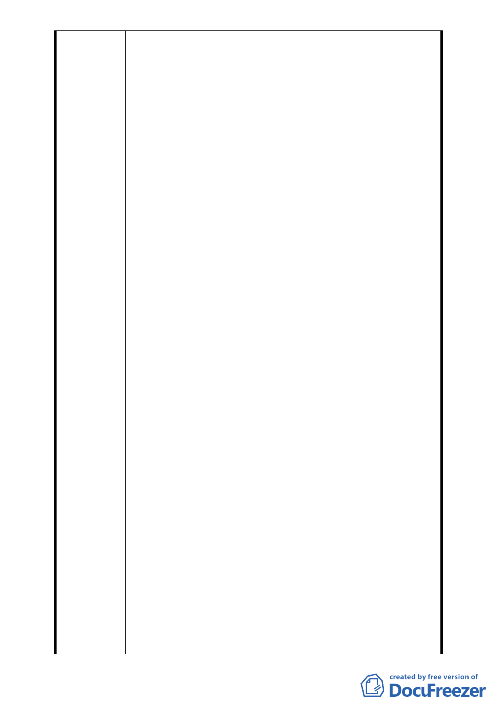

兩側地主 52 人中有 31 人同意參與更新，為何
不能有代表列席。又會議前很早就到都委會登記發
言，但是為什麼沒有請我們上去說明，如果不可以
發言，為何要登記，明明有這麼多陳情信、意願書
竟然不可以發言，如果不可以發言，為什麼我們登
記的時候沒有告知我們，我們這麼多人來到都委會
想表達參加都市更新意願，但是竟然在現場枯坐，
實在搞不清楚這是甚麼都委會。這麼重要的案子，
為什麼會是一個不能讓居民表達意見的案子。
5. 報告案未經討論遽下結論，有程序瑕疵
會中主席有云：此案在 595 次會議中遭擱置，
恐怕是（通過此案）考慮社會觀感不佳…云云，沒
錯主席的猜測是對的。原案 95％以上是國有地，
以不到 5％的私有地、人數不到 5 人就可以操縱龐
大的都更利益，國土得喪失莫此為甚。2 位發言委
員又誤導，大部分委員不表意見，595 次會議有意
見的委員又巧妙缺席。有委員說就讓本案過吧，就
遽下結論，留下一群錯愕氣憤的市井小民。我們質
疑既然是報告案，未經週邊關係人列席討論為何可
以做出結論？這違反開會程序，有嚴重瑕疵。會中
委員們的發言及委員缺席也可見建商運作手段的
粗暴。
6. 鑽都更法律漏洞以及少私有地綁架大塊國有地，
裡應外合圖利建商
本案中建商策略性的排除週邊地主，以不到 5
％的私有地挟制 95％的國有地，基地跨街廓也不
完整，有我們的加入就完整，只因為達欣已卡位就
把我們排除，這已經失去都更精神，這是縱容財團
建商竊取國土資源。若讓他們得逞，往後不知有多
少國有地不當落入他們手中。會中有委員竟然還說
出目前方案同意比例都比其他方案高，所以成功的
機會比其他高。真是扭曲事實、倒因為果，莫此為
甚。
會中有委員云：先讓它過，…若有區域重疊，
後申請者亦可以彼此競爭云云。目前該修正法案，
還在臺北市議會尚未排入議程，等到通過，國土已
被竊取，何來後者競爭。這是故意誤導其他委員，
安撫旁聽地主，只想快逞其目的而已。
7. 有道是在公門好修行，秉持良知良能始能善終
請都委會、更新處收到這個陳情信後，不要再
漠視我們的權益，過去達欣開發說有和我們溝通更
- 21 -